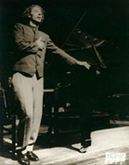

|
|  |
David Coifman Musicólogo Diario El Nacional, Caracas
|
La desaparición física del pianista y compositor
Carlos Duarte (1958-2003) es propicia para un minuto de
reflexión sobre la irreparable pérdida
artística que su ausencia representa en la vida cultural venezolana.
Para quienes en el país años atrás
disfrutaban del arte universal, particularmente centrado en la
interpretación pianística, las imágenes
sonoras pero siempre inertes de las grabaciones hechas por los grandes
intérpretes mundiales adquirían credibilidad
artística cuando eran revitalizadas por las manos incansables de
Duarte. No era sólo una imagen de excelencia musical
lo que transmitía, sino una capacidad para renovarla en
todas sus interpretaciones; no era sólo el disfrute
del lenguaje poético de la música universal, sino una firme
garantía de que sería recreado en sus siguientes
presentaciones. Y así, dentro de una suerte de ritual del arte
musical en el país, Duarte logró sembrar
en Venezuela la convicción de que éramos merecedores de sus
siempre
deslumbrantes y
aparentemente imperecederas interpretaciones musicales.
Pero Duarte no era un libro, un disco, ni una pintura
de museo. Al igual que el efímero arte sonoro
en su hecho presencial, quienes tienen el don de dar vida a la
música, al llamado del orden universal, son seres
humanos sensibles a los cambios anímicos, sociales,
culturales, políticos. Son como las frágiles
y siempre hermosas rosas a las cuales se nos ha dado el privilegio
de cultivar y proteger si queremos disfrutar de sus colores,
de sus olores, de su existencia plena, en el breve
paso hacia su predestinada muerte. ¡Qué
banal sería considerar ahora que sólo perdimos el esplendor
musical al
que nos acostumbró Duarte! La muerte anímica
del pianista precedió a la física, cuando dejamos a un lado
los
valores universales que nutrían su razón
de crear y existir en la vida cultural y artística del país.
¿Qué
trastrueque aciago desmedra ahora de los valores humanos
universales para justificar la desigualdad de
condiciones culturales de la música para piano,
para arpa, para cuatro, para todos los instrumentos musicales
con idénticas raíces lejanas en nuestro
país? ¿Quién está llamado a juzgar el valor
nacional de ese lenguaje
musical inequívocamente universal, occidental,
siempre efímero y cambiante que sostiene indefectiblemente toda
la música que se crea, piensa, escucha y respira
en Venezuela, llámese folklórica, popular o clásica?
Carlos Duarte era un creador autóctono, heredero
de una de las tradiciones musicales de prestigio universal con
mayor arraigue en nuestro país, y cuyo esplendor
artístico estaba destinado a quienes buscaban los valores
universales indispensables para cultivar y ver crecer
la vida sensible, humilde y sencilla de todo cuanto
habita y acontece en Venezuela. Sirva ahora en cambio
la despedida al arte universal de Carlos Duarte para dar
un minuto de silencio a todas las almas de los artistas
predestinadas a morir junto con los últimos vestigios
de universalidad y libertad venezolana que otorgan razón
de ser a la creación artística y por ende musical en
el país. ¡Descansa ahora el cuerpo de un
alma siempre libre!